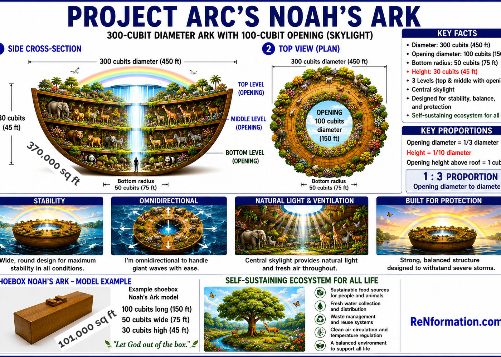
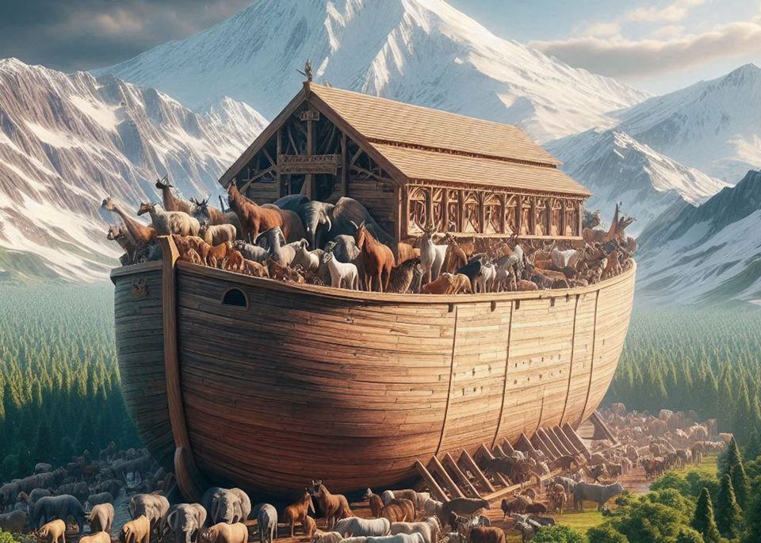
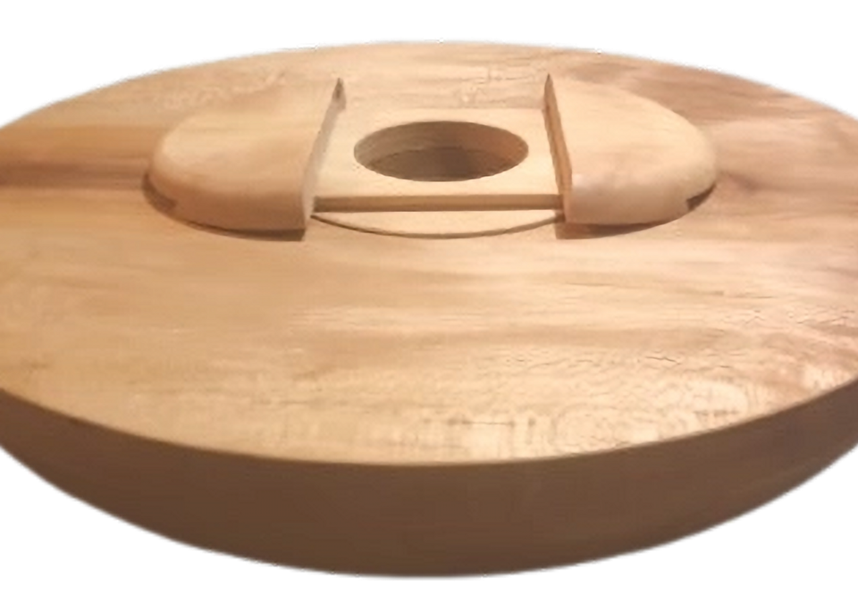
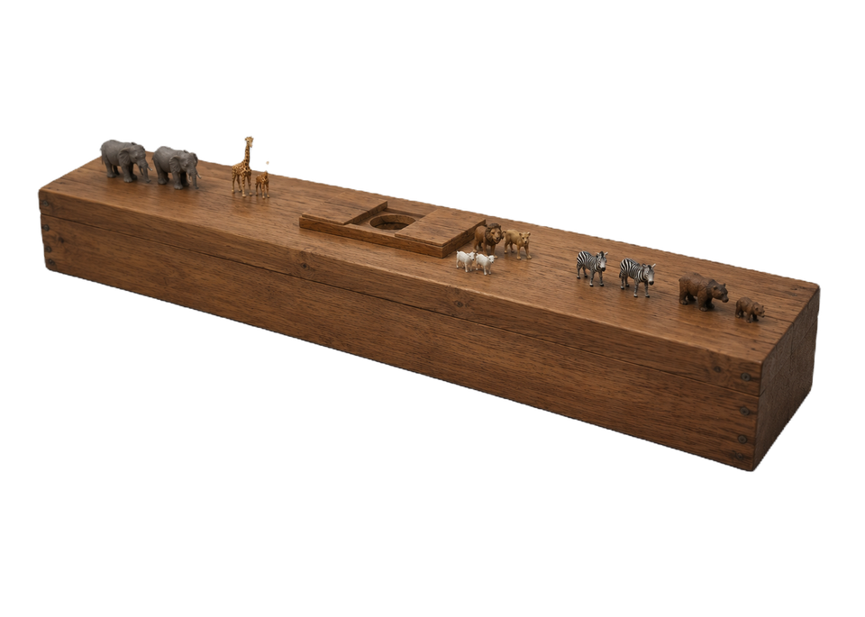
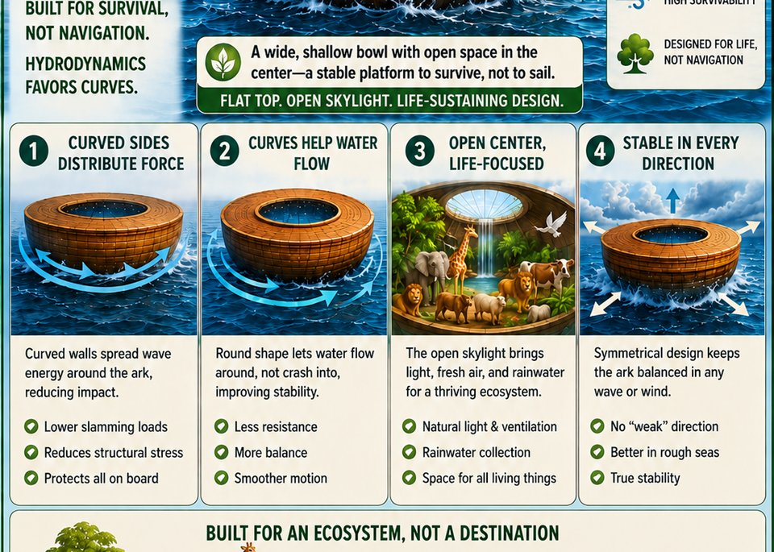
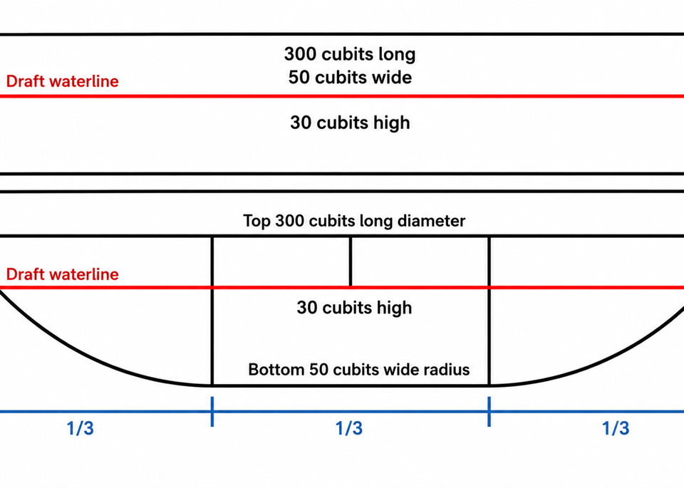
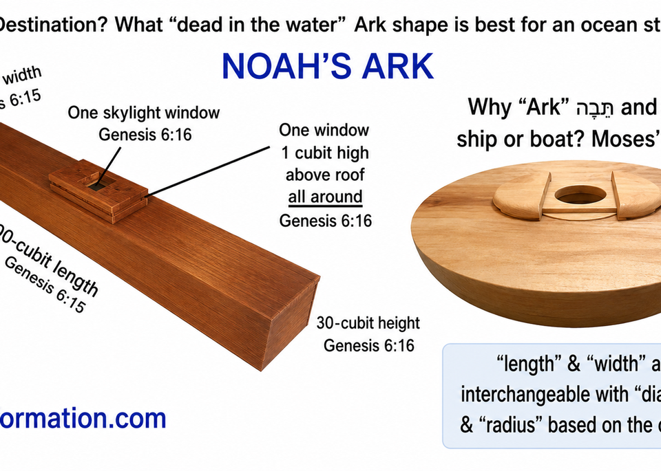
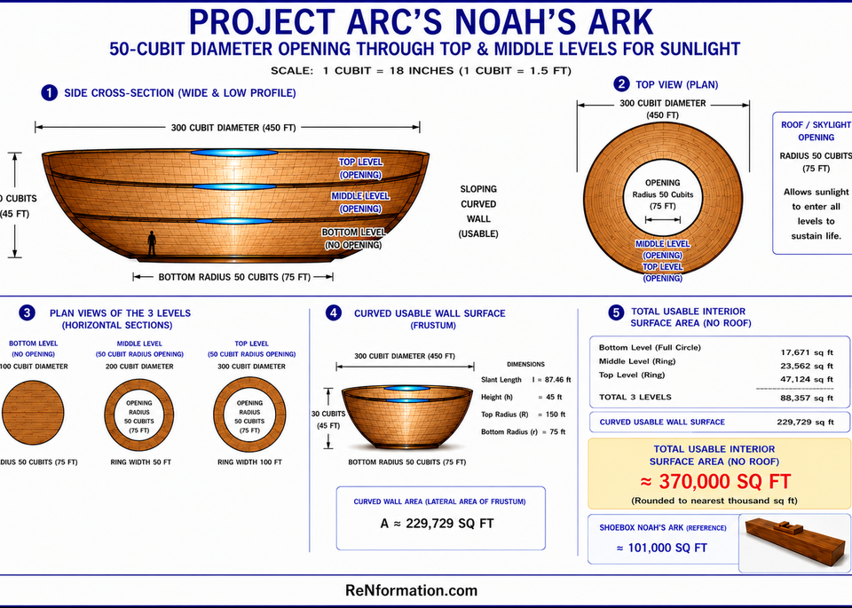
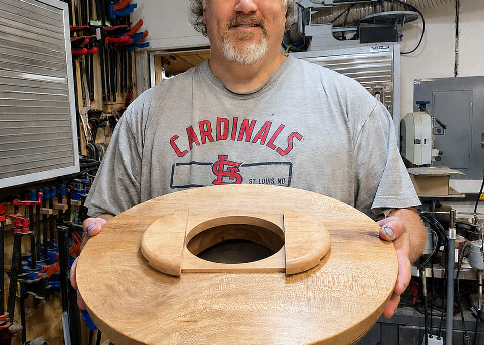

2:22 Church promotes Project Arc. The Bible never calls it a ship. It calls it a tevah, a vessel built to survive, not to sail.
For generations Noah's Ark has been drawn as a giant wooden shoebox with a bow and stern. Project Arc asks whether the inherited image is tradition, not Scripture.
Project Arc begins with a simple distinction. The flood narrative never commands Noah to navigate anywhere. God commands him to survive. No rudder, no sail, no propulsion, no steering, no destination. A rectangular barge built for travel makes little sense when the brief is endurance in chaos from every direction.
In global catastrophe, wave force comes from all sides. Flat walls catch the load head on. Corners concentrate stress. A curved circumferential hull spreads pressure around the structure instead of fighting it in one direction. Project Arc's question is blunt: which vessel would you trust your family inside?



Project Arc's central claim is that measurements only have meaning in context. In a nonlinear structure, terms we read as rectangular length and width may function as diameter, radius, circumference, or span from center. Scripture did not change. Our inherited visual assumptions may have.
The Hebrew word is tevah, the same word used for Moses' basket in the reeds. Preservation, enclosure, protected space. The Bible never calls Noah's vessel a ship.
Genesis 6:16 also places the window finished above, which Project Arc reads as a centralized opening overhead for light, ventilation, and atmospheric regulation, not a row of portholes along a vertical hull.

On Renformation.com, Project Arc presents a round, omnidirectional Ark built for stability, deep draft, and a self sustaining ecosystem. Their model uses a 300 cubit total diameter (450 ft), a 100 cubit central opening (150 ft), a 50 cubit bottom radius (75 ft), and 30 cubits height (45 ft), with three internal levels and roughly 370,000 sq ft of usable area compared to about 101,000 sq ft in the traditional shoebox reading.
Project Arc gave us the blueprint. The gently curved wall is also usable space, and the one third proportion governs the profile their diagrams show.



Project Arc uses the common 18 inch cubit standard in their published diagrams. The numbers below summarize their model for quick reference. For full derivation and engineering notes, read their page.
Roughly 300 × 50 × 30 cubits as a rectangular solid. About 101,000 sq ft usable floor space in their comparison chart. Built like a barge, not a survival shell.
300 cubit total diameter. 100 cubit central opening. 50 cubit bottom radius. 30 cubit height. Three levels. About 370,000 sq ft in their model, with curved wall space counted as usable area.

Context is king. Project Arc does not claim every logistical detail is solved. They do claim the shoebox picture fails the brief Genesis gives: survive the flood, preserve life, endure from every direction.
Project Arc publishes models and teaching media at Renformation.com. 2:22 Church may add a hosted walkthrough at blog-assets/study/noahs-ark-3d.mp4 later. Until then, use their diagrams above and their site directly.
See Project Arc models at Renformation.com
Primary source: Renformation.com / Project Arc Noah's Ark. All diagrams on this page are theirs. 2:22 Church built this summary to promote their research. Back to the Study hub. Next: Solomon's Temple. Truth 10 in Our Story.